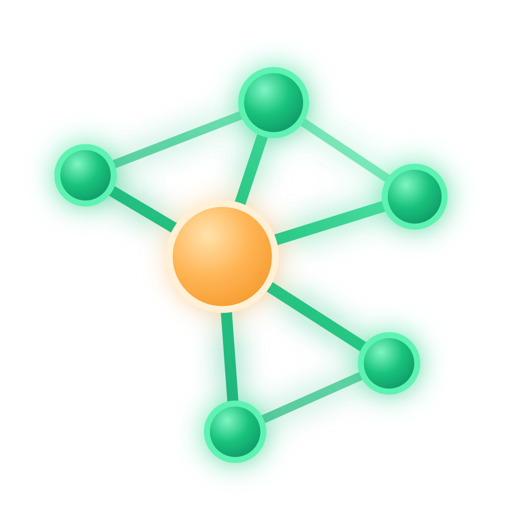
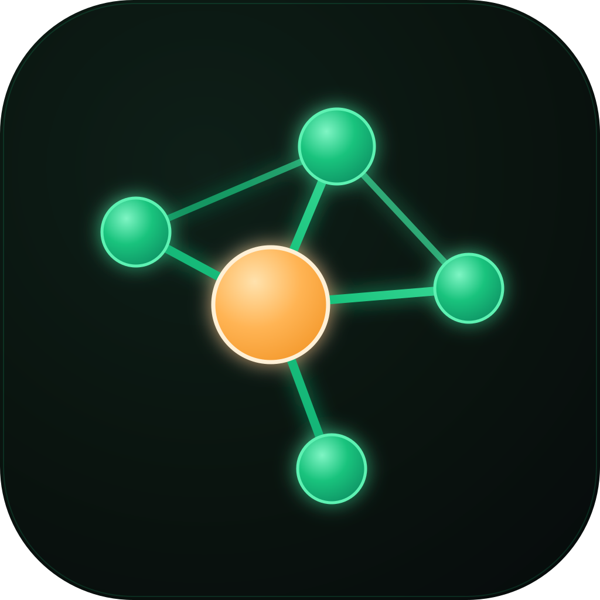
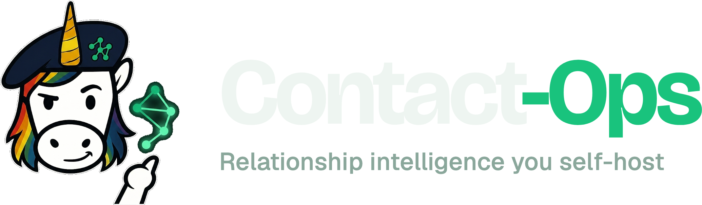
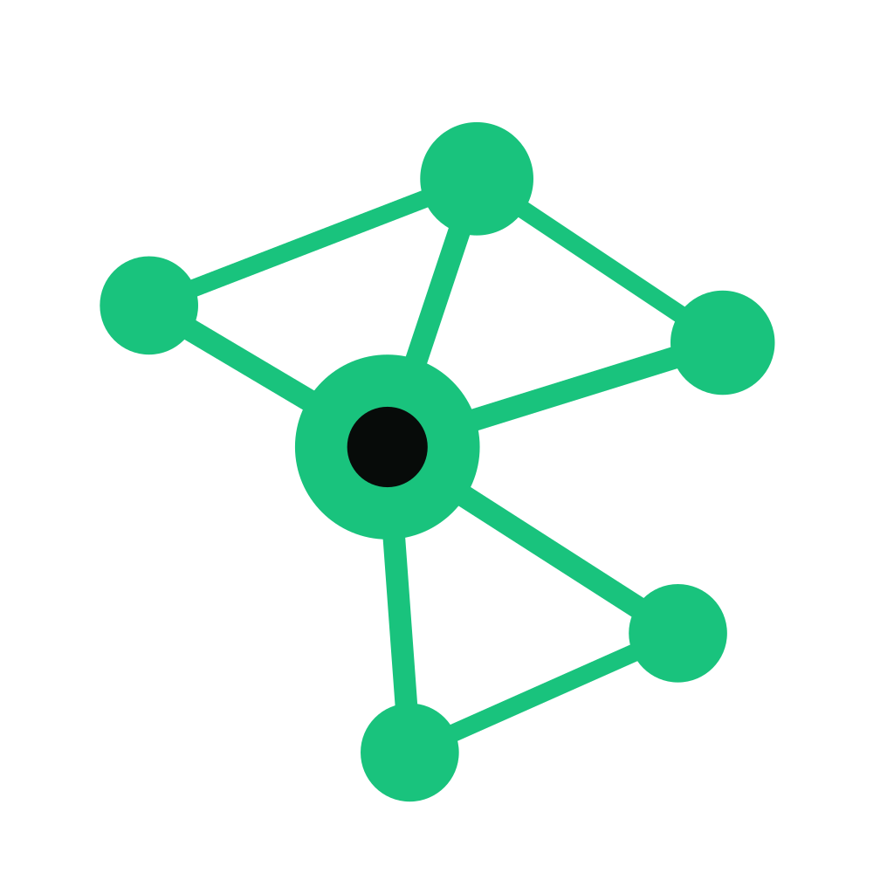

Contact-Ops is not a list of rows. It is a graph of people. The mark says exactly that: one warm anchor node, the human you are looking at, held inside a network of emerald nodes joined by glowing mint edges, with a few node-to-node cross-links so it reads as a relationship graph and not a hub-and-spoke. The warmth at the center is deliberate. Everything else in the suite is cool and technical; Contact-Ops keeps a human at its heart.
It is intentionally not a unicorn-head mascot. It speaks the suite's other native language: the clean, gradient-glyph icon system, sized so it still reads at 32 px. Emerald and spring mint are the one open color lane in a suite of purple, cyan, navy, and gold, and they carry the right meaning here: connection, presence, trust, growth.




Emerald and mint carry the brand; the warm signal is used sparingly, almost always reserved for the single anchor. Obsidian is the home surface. Keep contrast high and backgrounds dark.
Contact-Ops is a sub-brand of Unicorn Commander and a sibling to Meeting-Ops, Brand-Ops, and the rest of the *-Ops apps. It joins the "<X> intelligence you self-host" naming system (Meeting-Ops is meeting intelligence; Contact-Ops is relationship intelligence).
Where the playful surfaces of the suite use the unicorn officer mascots, Contact-Ops uses the suite's abstract gradient-glyph language instead, with its own emerald signature, so it is unmistakably part of the family and still entirely its own. The mascot path is intentionally left unused.